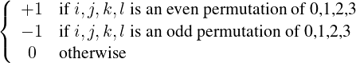

| Up | Next | Tail |
We begin by introducing three new operators required in these calculations.
Syntax:
The binary . operator, which is normally used to denote the addition of an element to the front of a list, can also be used in algebraic mode to denote the scalar product of two Lorentz four-vectors. For this to happen, the second argument must be recognizable as a vector expression at the time of evaluation. With this meaning, this operator is often referred to as the dot operator. In the present system, the index handling routines all assume that Lorentz four-vectors are used, but these routines could be rewritten to handle other cases.
Components of vectors can be represented by including representations of unit vectors in the system. Thus if eo represents the unit vector (1,0,0,0), (p.eo) represents the zeroth component of the four-vector P. Our metric and notation follows Bjorken and Drell [JDB65]. Similarly, an arbitrary component p may be represented by (p.u). If contraction over components of vectors is required, then the declaration index must be used. Thus
declares u as an index, and the simplification of
would result in
The metric tensor gμν may be represented by (u.v). If contraction over u and v is required, then they should be declared as indices.
Errors occur if indices are not properly matched in expressions.
If a user later wishes to remove the index property from specific vectors, he can do it with the declaration remind. Thus remind v1,…,vn; removes the index flags from the variables V1 through Vn. However, these variables remain vectors in the system.
Syntax:
g is an n-ary operator used to denote a product of γ matrices contracted with Lorentz four-vectors. Gamma matrices are associated with fermion lines in a Feynman diagram. If more than one such line occurs, then a different set of γ matrices (operating in independent spin spaces) is required to represent each line. To facilitate this, the first argument of g is a line identification identifier (not a number) used to distinguish different lines.
Thus
denotes the product of γ.p associated with a fermion line identified as l1, and γ.q associated with another line identified as l2 and where p and q are Lorentz four-vectors. A product of γ matrices associated with the same line may be written in a contracted form.
Thus
The vector a is reserved in arguments of G to denote the special γ matrix γ5. Thus
| g(l,a) | = γ5 | associated with the line l |
| g(l,p,a) | = γ ⋅ p × γ5 | associated with the line l. |
γμ (associated with the line l) may be written as g(l,u), with u flagged as an index if contraction over u is required.
The notation of Bjorken and Drell is assumed in all operations involving γ matrices.
The operator eps has four arguments, and is used only to denote the completely antisymmetric tensor of order 4 and its contraction with Lorentz four-vectors. Thus
|
𝜖ijkl =  |
A contraction of the form 𝜖ijμνpμqν may be written as eps(i,j,p,q), with i and j flagged as indices, and so on.
| Up | Next | Front |